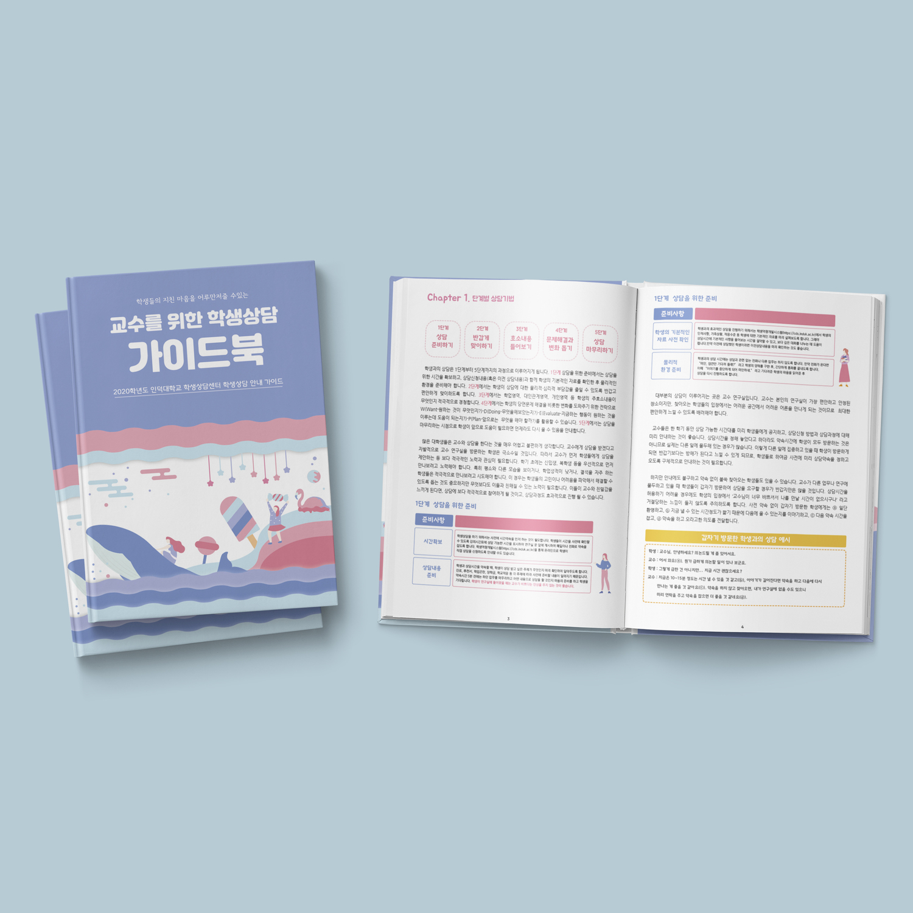

Guidebook Design
인덕대학교 학생상담 센터와 협력하여 제작한 학생상담 가이드북입니다.
학업과 진로, 대인관계 등에 어려움을 겪고 있는 대학생들을 위해 만든 가이드북으로, 힘든 상황에 처해있는 학생들의 지친 마음과 우울함을 극복할 수 있게 도움을 주는 교수님들의 상담 가이드들이 적혀있습니다.
학생들의 어려움과 고민들을 정확히 이해 후 원인을 파악하여 문제해결방법을 효과적으로 제시한 내용을 토대로 따뜻하고 동적인 느낌의 디자인을 뽑아냈습니다.